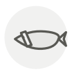

Sériole couronnée (kanpachi)
Greater amberjack (kanpachi)
| Nom latin | Seriola dumerili |
|---|---|
| Famille | Poissons & fruits de mer |
| Origine | Kyūshū & Pacifique occidental |
| Saison | juin – septembre |
| Goût | Sucré · Délicat · Riche · Iodé |
| Prix courant | 40–70 €/kg |
Ce que c’est
Le nom japonais se lit sur la tête : une bande sombre court de chaque œil à la dorsale, et vues d’en haut les deux dessinent entre les yeux le caractère de huit, hachi. C’est une sériole différente du buri, au calendrier inverse — maigre et ferme tout l’été, quand la sériole d’hiver est au plus bas.
En cuisine
Elle tient la tranche mieux que le buri : taillez les sashimis plus épais, huit à dix millimètres, et laissez la texture parler. Le sel et le sudachi lui vont mieux que les apprêts gras au soja qui flattent la sériole d’hiver.
S’accorde avec
Sauce soja Wasabi Sudachi Daïkon Shiso Ponzu Saké junmai Sel
Même espèce
De saison en même temps
Barbue Omble chevalier Écrevisse Denté Homard Langouste rouge
Une erreur ici, ou un oubli ? Dites-le nous